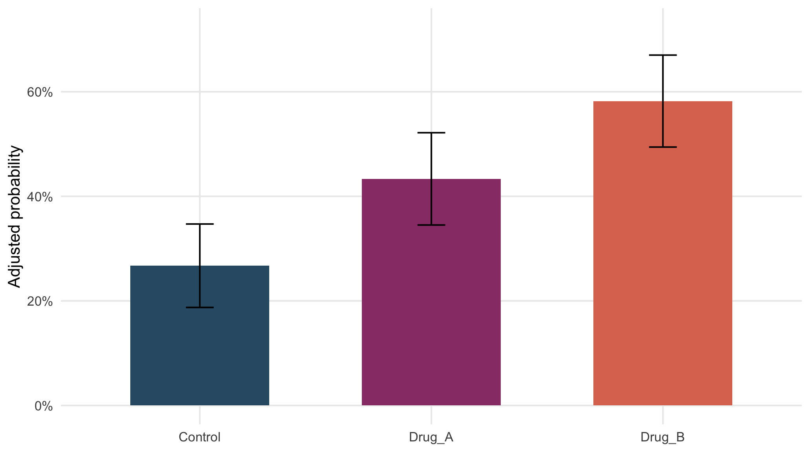

To assess whether treatment adds information to the logistic regression model, compare the full model, which includes treatment, with a reduced model containing the same baseline covariates but excluding treatment.
logit_no_trt <- update(logit_fit,.~.-treatment_arm)
anova(logit_no_trt,logit_fit,test="LRT")
#> Analysis of Deviance Table
#>
#> Model 1: clinical_response_12w ~ age10 + baseline_severity + biomarker50
#> Model 2: clinical_response_12w ~ treatment_arm + age10 + baseline_severity +
#> biomarker50
#> Resid. Df Resid. Dev Df Deviance Pr(>Chi)
#> 1 355 484
#> 2 353 459 2 24.4 0.0000052 ***
#> ---
#> Signif. codes: 0 '***' 0.001 '**' 0.01 '*' 0.05 '.' 0.1 ' ' 1The likelihood-ratio test evaluates whether the treatment terms improve model fit.
\[ H_0:\text{treatment does not improve the model}. \]
A small p-value indicates that including treatment provides additional information about clinical response after adjustment for the baseline covariates.
Logistic-regression coefficients are estimated on the log-odds scale. Exponentiating the treatment coefficients gives adjusted odds ratios comparing each active treatment with Control while accounting for the other variables in the model.
broom::tidy(logit_fit,conf.int=TRUE,exponentiate=TRUE) |>
filter(grepl("^treatment_arm",term)) |>
kbl(digits=3,caption="Adjusted treatment odds ratios for clinical response")| term | estimate | std.error | statistic | p.value | conf.low | conf.high |
|---|---|---|---|---|---|---|
| treatment_armDrug_A | 2.127 | 0.285 | 2.648 | 0.008 | 1.223 | 3.746 |
| treatment_armDrug_B | 3.925 | 0.286 | 4.786 | 0.000 | 2.261 | 6.942 |
An odds ratio of 1 indicates equal odds of response. Values above 1 indicate higher odds and values below 1 indicate lower odds. For example, an odds ratio of 2 means twice the odds of response, not twice the probability.
Odds ratios are useful for inference, but probabilities are often easier to interpret clinically. The fitted model can therefore also be used to estimate an adjusted response probability for each treatment group.
For each treatment arm, the model predicts every participant’s response probability as if that participant received that treatment, while keeping the participant’s baseline covariates unchanged. The predicted probabilities are then averaged across all participants.
std_risk <- function(model,data,arm){
nd <- data
nd$treatment_arm <- factor(arm,levels=levels(data$treatment_arm))
X <- model.matrix(delete.response(terms(model)),nd)
eta <- drop(X%*%coef(model));
p <- plogis(eta)
grad <- colMeans(X*as.numeric(p*(1-p)))
se <- sqrt(drop(t(grad)%*%vcov(model)%*%grad))
tibble(treatment_arm=arm, probability=mean(p), lower=max(0,mean(p)-qnorm(.975)*se),upper=min(1,mean(p)+qnorm(.975)*se))
}
std_prob <- bind_rows(
lapply(levels(logit_dat$treatment_arm), \(a) std_risk(logit_fit,logit_dat,a))
)
kbl(std_prob,digits=3,
caption="Adjusted clinical-response probabilities")| treatment_arm | probability | lower | upper |
|---|---|---|---|
| Control | 0.267 | 0.187 | 0.347 |
| Drug_A | 0.433 | 0.345 | 0.522 |
| Drug_B | 0.582 | 0.494 | 0.670 |
The resulting value for each treatment arm is the average predicted probability of response after accounting for the baseline covariates in the model.
ggplot(std_prob,aes(treatment_arm,probability,fill=treatment_arm)) +
geom_col(width=.6) +
geom_errorbar(aes(ymin=lower,ymax=upper),width=.12) +
scale_fill_manual(values=pal,guide="none") +
scale_y_continuous(labels=scales::percent,
limits=c(0,max(std_prob$upper)*1.08)) +
labs(x=NULL,y="Adjusted probability")
Figure 22.1: Adjusted clinical-response probabilities with approximate 95% confidence intervals.
The adjusted probabilities express the model results directly on the probability scale and complement the odds ratios.